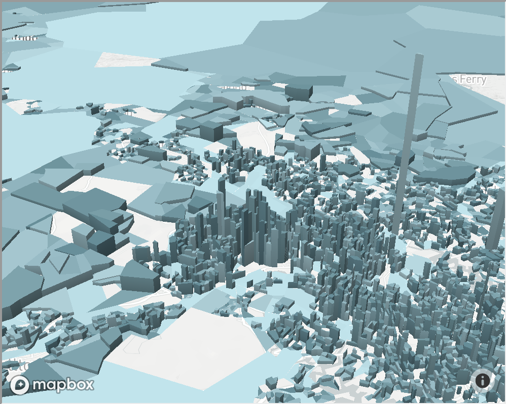
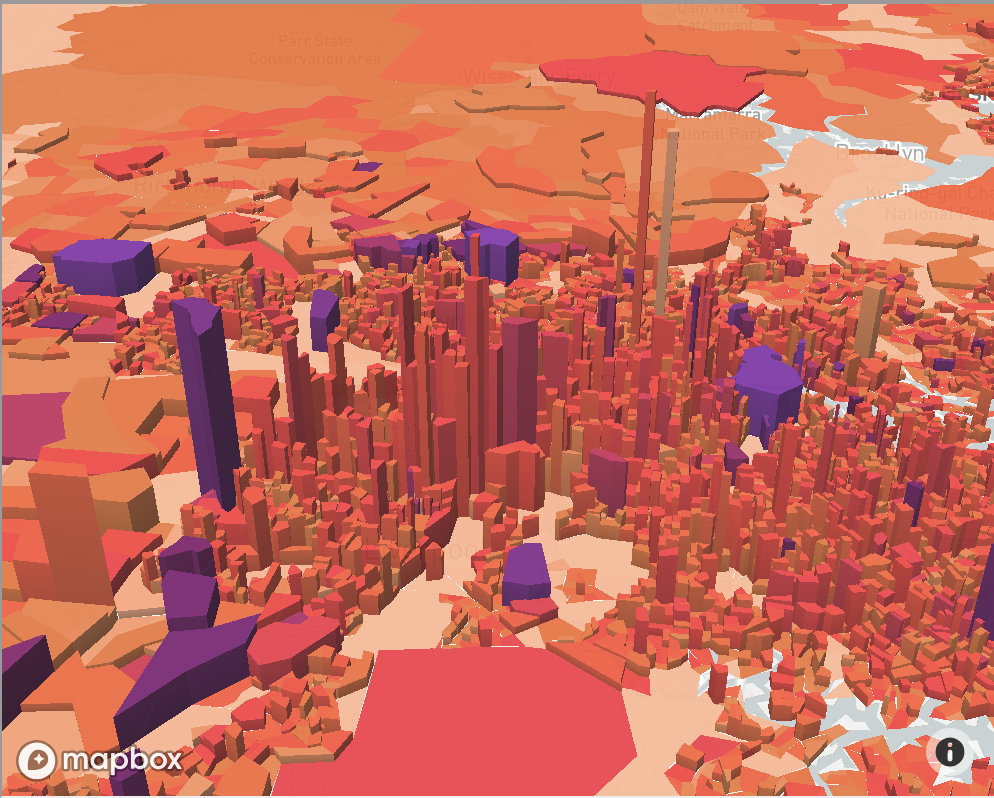

Problem
People living in South of the Latte line are generally not required very high education.



Due to the fact that most of the white collar work places locate at Northern of Latte line while South of the line are main work spaces for labours which are not required to accept higher education.
Transportation
The another reason relates to education acception is the transportation. the transportation exists problem of inconvenient, so that even though people who employed by companies in northern of Latte line, they face a harder situation on transportation which is likely causing them being late and getting fired. this condition decreases the number of people going to accept higher education as well.